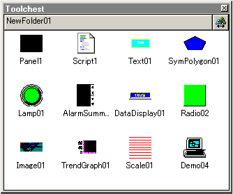
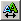
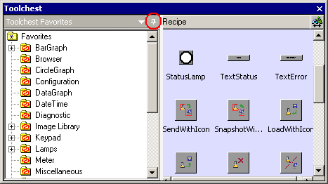
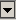

|
|
|
|
|
|
|
|
The Toolchest is a folder structure for storing drawings, animations, panels, alarm groups, graphical objects, image library objects, and Toolchest parts. When you store a graphical object, the Toolchest also stores the variables assigned to the object.

Toolchest objects can be used in more than one panel or on more than one target machine. You can increase the speed and efficiency of HMI project development by creating your objects once and storing them in the Toolchest for future use, and by reusing and manipulating the Toolchest Parts, which are pre-configured switches, lamps, and graphs.
The Toolchest's objects are independent from individual projects and therefore, are available to any project. You also can export Toolchest objects so they can be shared among many panel designers.
In addition to the Toolchest objects described above, the Toolchest also stores Image Library objects, which are professional-quality images you can add to your project.
To store different types of objects, drag them from the project and drop them into the Toolchest. To insert Toolchest objects in your project, drag the objects from the Toolchest and drop them onto your panel.
Vijeo-Designer provides parts that can be accessed from two locations: the Toolchest icon in the menu bar or the Toolchest option from the Tools menu. The Toolchest contains the folders where Toolchest Parts are stored and also displays objects stored in the selected folder. The window displays objects either as thumbnails or actual size objects. Click the

button at the top right corner of the Toolchest window to change the view.The pin button displays at the top-right corner of the Toolchest window's folder view. When the pin is pressed, the folder view hides and is indicated as a tab. This provides more space for the parts to display. To open the folder view again, place your cursor over the tab. To keep the folder view, press the pin again.

You can dock Toolchest folders in the Toolchest window by clicking the down arrow button

in the Toolchest Favorites title bar or by right-clicking the Toolchest Favorites title bar. Select one of the following options from the docking menu:Docking on Top - Displays Toolchest folders on the top part of the Toolchest window.
Docking on Bottom - Displays Toolchest folders on the bottom part of the Toolchest window.
Docking on Left - Displays Toolchest folders on the left side of the Toolchest window.
Docking on Right - Displays Toolchest folders on the right side of the Toolchest window.